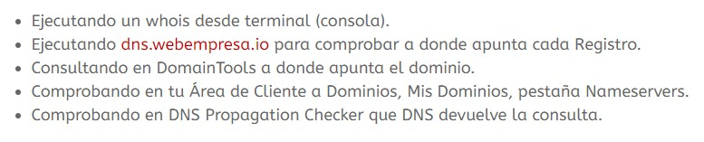
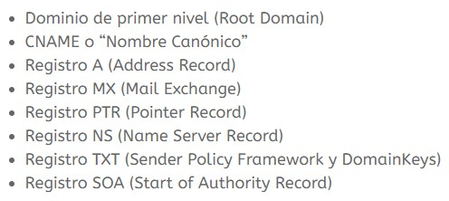

Son muchos los servicios existentes en Internet para extraer información de un dominio, conocer los datos del registrante y del registrador así como los DNS a los que apunta dicho dominio y todo esto se obtiene por medio de un Whois.
Whois es un protocolo TCP basado en petición/respuesta usado para consultar en una base de datos sobre el dominio, estado del mismo y otras informaciones más sensibles (teléfono, dirección) a menos que estas hayan sido ocultadas mediante servicios como OwO (OvhWhoisObfuscateur de OVH).
Hay varias formas de averiguarlo:

Por supuesto hay muchas más formas de comprobarlo pero no voy a enumerarlas en este artículo, con las citadas es suficiente para obtener esta información.
A partir de aquí, y sabiendo a donde apuntan los DNS de tu dominio, si estos no apuntan correctamente lo siguiente es saber cómo modificarlos.
Si es posible que un dominio no apunte todos los registros de DNS al mismo servidor, pudiendo separar estos registros por servicios (email, web, etc.) enviando dicho tráfico en ambos sentidos hacia otro servidor diferente.
Los registros que componen un DNS son:

Por ejemplo, los servidores de nombres (NS) son servidores DNS que contienen la información acerca de los dominios.
Es posible tener una web alojada en un servidor diferente del mismo proveedor de Hosting o de otro externo, simplemente apuntando el Registro A que responde a la web y mantener el correo apuntando en Registro MX en un servidor diferente.